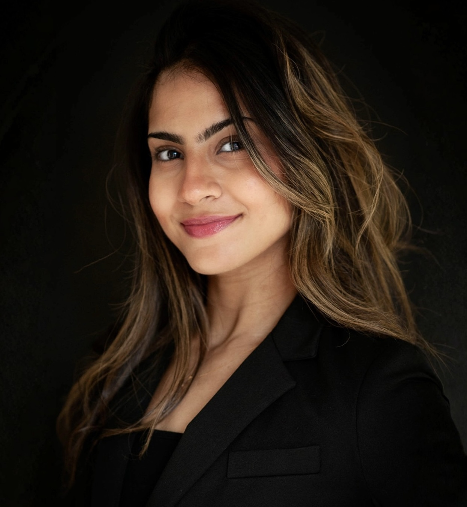
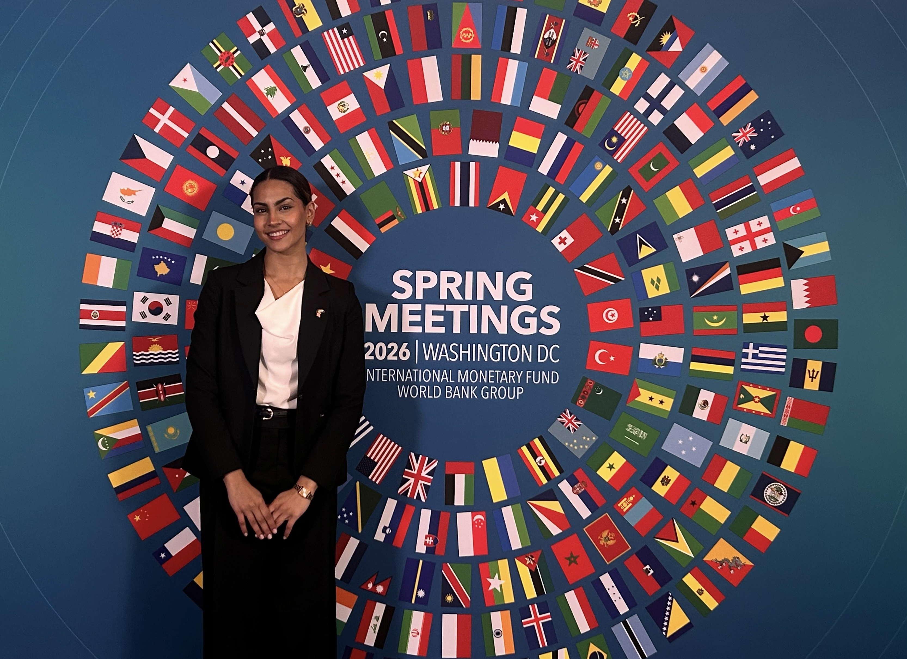
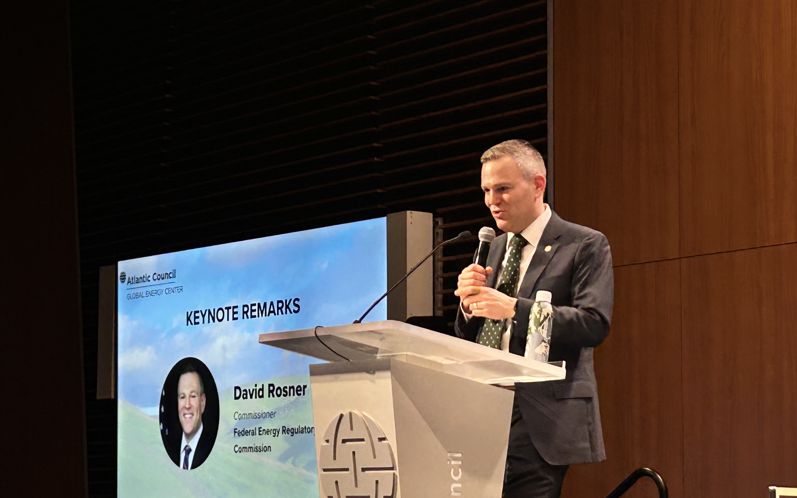
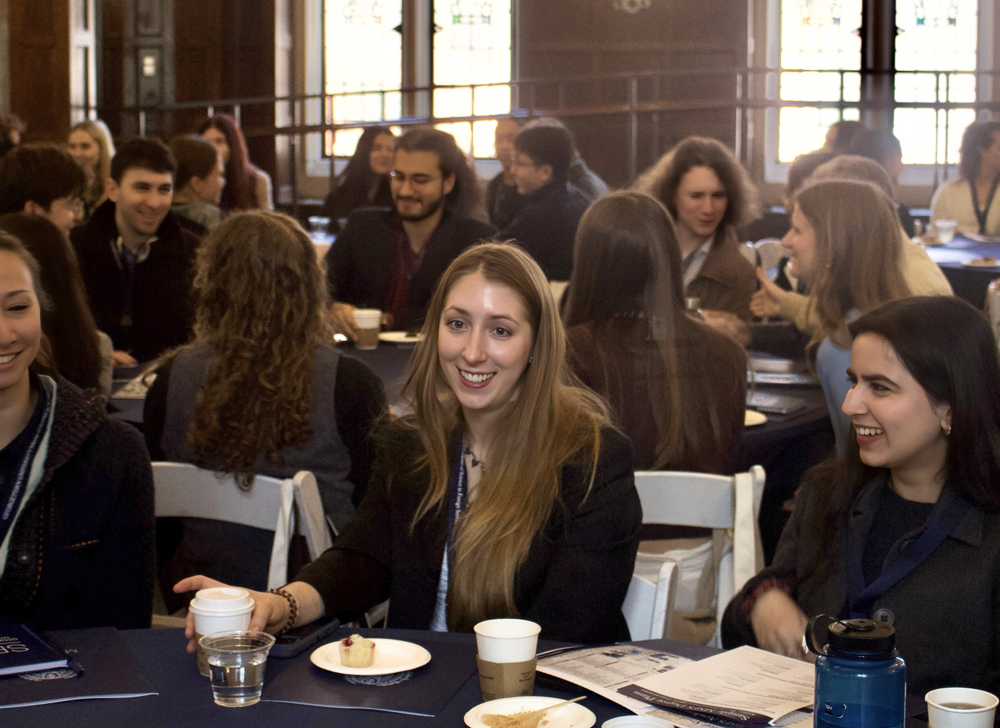

Policy Analyst & Researcher
Guided by a strong sense of global citizenship.
Energy & Environment · Grid & Critical Infrastructure Security
Africa, SWANA, & Emerging Markets · Science & Technology Policy
Georgetown University
M.S. Foreign Service
Washington, D.C.
Zeinah Abdelsalam is a policy analyst and researcher working at the intersection of energy security, emerging technology, and international affairs. Originally from Egypt and raised in Dubai, she moved to the United States to pursue a B.S. in Economics and Political Science at West Virginia Wesleyan College, graduating summa cum laude.
She is currently a second-year M.S. in Foreign Service candidate at Georgetown University, concentrating in the STEM-designated Science and Technology in International Affairs track with a focus on Energy and Environment, completing certificates in African Studies and Diplomatic Studies. Her work centers on the pragmatics of energy transition — examining how grid modernization, critical minerals, commodity markets, AI energy demand, and infrastructure and market trends are reshaping geopolitical power dynamics — not just across the U.S., SWANA, Africa, and Europe, but the world.
Professionally, she serves as an Energy, Tech, and Trade Policy Associate at Aquia Group and as MSFS Communications and Events Assistant at Georgetown's School of Foreign Service.
M.S. Foreign Service
Georgetown University
STEM-designated Science & Technology in International Affairs
Energy & Environment Sub-concentration
Certificates: African Studies · Diplomatic Studies
B.S. Economics & Political Science
West Virginia Wesleyan College
Summa Cum Laude · 4.0
NCAA DII Swimming
Outstanding Senior · Thomas Albinson Award
Sam Ross Scholar Athlete
High School Diploma
The Westminster School, Dubai
Cambridge IGCSE Curricula
Economics · Accounting · Business
Computer Science · Mathematics · Art & Design
Select academic, professional, and creative work organized by project type.
01
Formal memoranda to decision-makers spanning maritime decarbonization, commercial space licensing, cybersecurity, BBNJ ocean governance, and national risk strategy.
8 items
View collection →02
Longer-form academic papers on clean energy geopolitics, critical mineral supply chains, Nigerian climate policy, Egyptian space strategy, and science & technology institutions.
4 papers
View collection →03
Slide decks, design work, and creative communications projects — from energy transition ethics to critical minerals geopolitics, branding, and political campaign strategy.
4 projects
View collection →2024–2025
Outstanding Senior Award
Awarded to seniors with a 3.8+ GPA who exemplify academic excellence, leadership, and dedicated service to the college community.
2024–2025
Thomas Albinson Award
Presented to one exceptional Albinson School of Business student for outstanding academic achievement and professional promise in economics.
2024–2025
Outstanding Leadership Award
Recognizes exemplary leadership in guiding peers, driving positive change, and mobilizing campus-wide initiatives.
2024–2025
Sam Ross Scholar Athlete Award
Honors a student-athlete who excels both academically and athletically, exemplifying balanced achievement and dedication.
2024–2025
CCE Certificate of Diplomacy
Awarded for meaningful involvement, relationship-building, and advocacy within the Center for Civic Engagement.
2024–2025
Outstanding Economics Student
Top-performing student for academic excellence, intellectual curiosity, and impactful contributions in economics coursework and research.
2024–2025
Outstanding Senior in Political Science
Recognizes one student for academic excellence, leadership, and engagement with political systems, theory, and global affairs.
2024–2025
Outstanding Peer Leader Award
Presented by the CCE for inspiring peers through leadership, initiative, and a strong commitment to social change and community impact.
For a comprehensive list, visit LinkedIn →
A visual thread running alongside the policy work — photography, events, and life. Evidence that curiosity doesn't stay in one lane.


